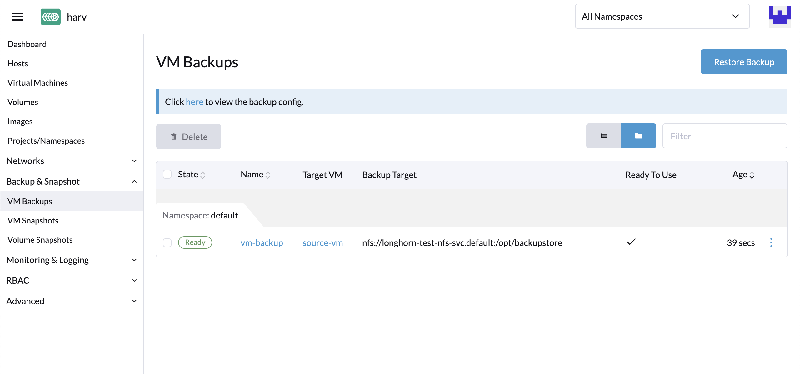
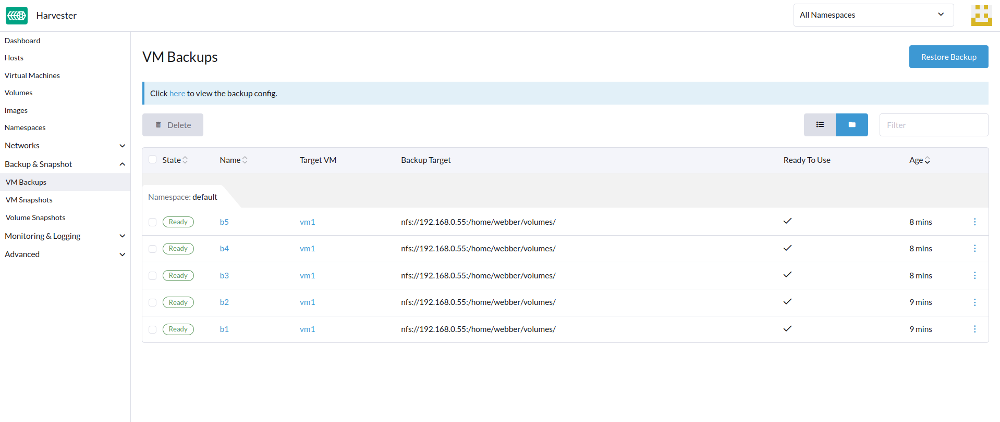
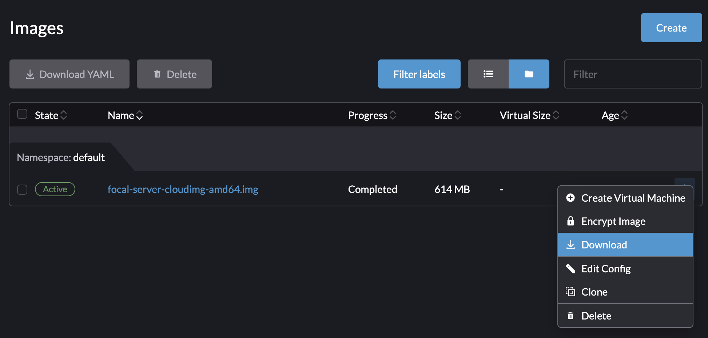
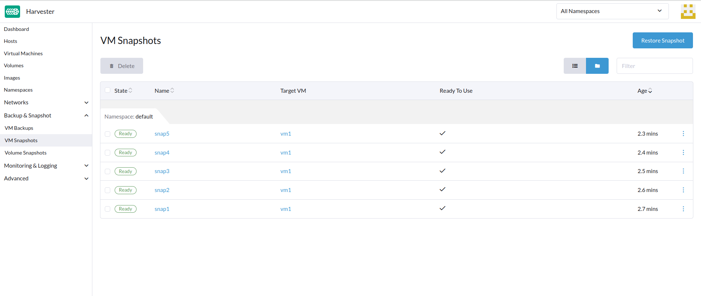
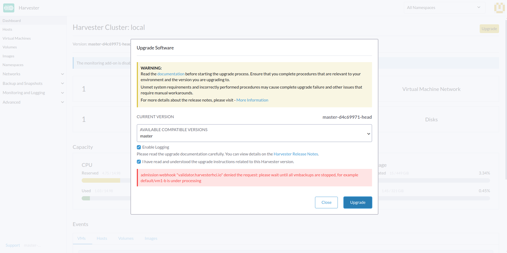
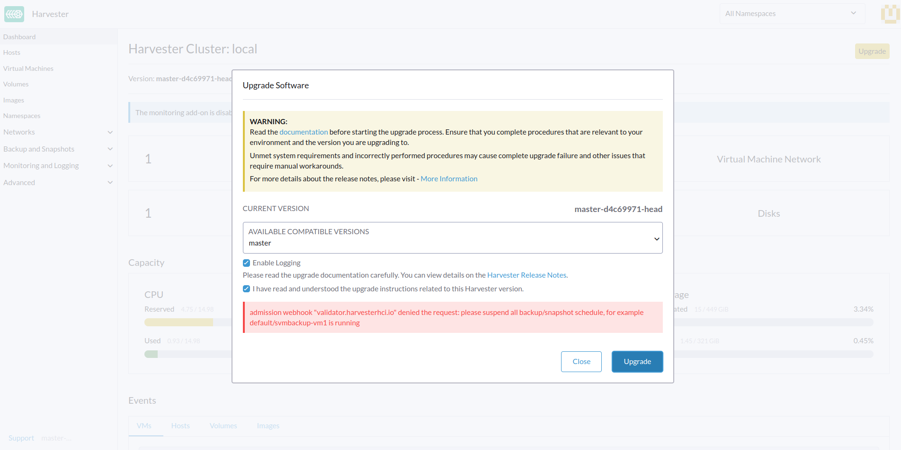

虚拟机备份、快照和恢复
虚拟机备份和恢复
虚拟机备份是在*虚拟机*页面创建的。虚拟机备份卷将存储在*备份目标*（NFS或S3服务器）中，可以用于恢复新的虚拟机或替换现有的虚拟机。

|
必须配置备份目标。有关详细信息，请访问 [Configure Backup Target]。如果未设置备份目标，将提示您配置一个。 备份支持目前仅限于SUSE Storage卷。SUSE Virtualization无法创建外部存储中卷的备份。 |
配置备份目标
备份目标是用于访问SUSE Virtualization中的备份存储的端点。备份存储是一个NFS服务器或S3兼容服务器，用于存储虚拟机卷的备份。备份目标可以在`Settings > backup-target`处设置。
下表概述了所有备份目标的共同参数。
| 参数 | 类型 | 说明 |
|---|---|---|
|
字符串 |
存储虚拟机使用的卷备份的服务器类型。您可以选择`NFS`或`S3`。 |
|
integer |
SUSE Virtualization在与备份存储同步备份之前等待的秒数。当值为`0`时，仅在所有备份卷处于`Ready`状态时才会同步备份。 |
-
S3
-
NFS
| 参数 | 类型 | 说明 |
|---|---|---|
|
字符串 |
（可选）用于访问S3服务器的端点的主机名或IP地址 |
|
字符串 |
S3桶的名称 |
|
字符串 |
创建S3桶的AWS区域 |
|
字符串 |
您用于验证对AWS服务请求的访问密钥的第一部分（例如， |
|
字符串 |
您用于验证对 AWS 服务请求的访问密钥的第二部分（例如， |
证书 |
字符串 |
S3 服务器的自签名 SSL 证书 |
VirtualHostedStyle |
boolean |
使用虚拟主机样式 URL 的选项，其中存储桶名称是 URL 中域名的一部分（ |
| 参数 | 类型 | 说明 |
|---|---|---|
端点 |
字符串 |
NFS 服务器 的 URL |
创建虚拟机备份
-
设置备份目标后，请转到
Virtual Machines页面。 -
单击虚拟机操作的
Take Backup以创建新的虚拟机备份。 -
设置自定义备份名称，然后单击
Create创建新的虚拟机备份。
*结果：*备份已创建。您将收到通知消息，您也可以转到 Backup & Snapshot > VM Backups 页面查看所有虚拟机备份。
备份完成后，State 将设置为 Ready。

用户可以使用此备份恢复新的虚拟机或替换现有的虚拟机。
|
运行 Ubuntu 16.04 之后版本的虚拟机，其网络配置默认可能由 恢复的虚拟机保留原始虚拟机的机器 ID。如果未指定 |
|
从 v1.7.0 开始，SUSE Virtualization 支持 Longhorn V2 数据引擎卷的备份和快照。 但是，删除虚拟机的最新备份或启用 SUSE Storage 设置 删除备份时自动清理快照 会阻止对相关卷的所有后续操作。这是一个 已知问题，影响卷快照、备份和实时迁移等操作。 目前没有可行的解决方法。解决被阻塞状态需要删除受影响的卷，以恢复 Longhorn Manager 的功能。 |
使用备份恢复新的虚拟机
-
访问`VM Backups`页面。
-
点击右上角的`Restore Backup`按钮。
-
指定新的虚拟机名称并点击`Create`。
-
将使用备份卷和元数据恢复新的虚拟机，您可以从`Virtual Machines`页面访问它。

使用备份替换现有虚拟机
您可以使用相同虚拟机备份目标的备份替换现有虚拟机。
您可以选择删除或保留之前的卷。默认情况下，所有之前的卷都会被删除。
*要求：*虚拟机必须存在，并且需要处于关闭状态。
-
访问`VM Backups`页面。
-
点击右上角的`Restore Backup`按钮。
-
单击
Replace Existing。 -
您可以从`Virtual Machines`页面查看恢复过程。

在另一个SUSE Virtualization集群上恢复新的虚拟机
用户现在可以通过利用虚拟机元数据和内容备份功能，在另一个集群上恢复新的虚拟机。
先决条件
-
v1.4.0及更高版本：控制器会自动将虚拟机镜像与新集群同步，除非新集群上已经存在同名或同显示名的虚拟机镜像。
-
早于v1.4.0：您必须在新集群上上传和配置虚拟机镜像。确保镜像名称和配置相同，以便可以恢复虚拟机。
将相同的虚拟机镜像上传到新集群。
-
从现有集群下载虚拟机镜像。

-
解压下载的镜像。
$ gzip -d <image.gz>
-
在一个可以被新集群访问的服务器上托管该镜像。
示例（简单的HTTP服务器）：
$ python -m http.server
-
检查现有镜像名称（通常以`image-`开头），并在新集群上创建相同的名称。
$ kubectl get vmimages -A NAMESPACE NAME DISPLAY-NAME SIZE AGE default image-79hdq focal-server-cloudimg-amd64.img 566886400 5h36m default image-l7924 harvester-v1.0.0-rc2-amd64.iso 3964551168 137m default image-lvqxn opensuse-leap-15.3.x86_64-nocloud.qcow2 568524800 5h35m -
在新集群中应用一个`VirtualMachineImage` YAML，名称和配置相同。
示例：
$ cat <<EOF | kubectl apply -f - apiVersion: harvesterhci.io/v1beta1 kind: VirtualMachineImage metadata: name: image-79hdq namespace: default spec: displayName: focal-server-cloudimg-amd64.img pvcName: "" pvcNamespace: "" sourceType: download url: https://<server-ip-to-host-image>:8000/<image-name> EOF
SUSE Virtualization 只能在旧集群和新集群的镜像名称和配置相同的情况下恢复虚拟机。
虚拟机快照与恢复
虚拟机快照是在*虚拟机*页面创建的。虚拟机快照卷将存储在集群中，可以用于恢复新的虚拟机或替换现有的虚拟机。

创建虚拟机快照
-
访问`Virtual Machines`页面。
-
单击虚拟机操作的`Take VM Snapshot`以创建新的虚拟机快照。
-
设置自定义快照名称，然后点击`Create`以创建新的虚拟机快照。

*结果：*快照已创建。您也可以访问`Backup & Snapshot > virtual machine Snapshots`页面查看所有虚拟机快照。
一旦快照完成，State`将被设置为`Ready。

用户可以使用此快照恢复新的虚拟机或替换现有的虚拟机。
|
运行 Ubuntu 16.04 及更高版本的虚拟机的网络配置默认可能由 恢复的虚拟机保留原始虚拟机的机器 ID。如果未指定 |
|
从 v1.7.0 开始，SUSE Virtualization 支持 Longhorn V2 数据引擎卷的备份和快照。 然而，删除虚拟机的最新备份会阻止对相关卷的所有后续操作。这是一个 已知问题，影响卷快照、备份和实时迁移等操作。 目前没有可行的解决方法。解决被阻塞状态需要删除受影响的卷，以恢复 Longhorn Manager 的功能。 |


虚拟机快照空间管理


虚拟机备份和快照的文件系统冻结
当来宾虚拟机与*QEMU来宾代理*连接时，SUSE Virtualization控制器通过Kubevirt的 virt-freezer应用程序执行文件系统冻结操作，以确保在虚拟机备份和快照期间文件系统的一致性。
此功能对于具有高I/O活动或需要时间点一致性保证的关键数据的虚拟机特别有价值。
先决条件
文件系统冻结和解冻功能取决于虚拟机配置，_不受SUSE Virtualization_控制。您必须确保虚拟机配置正确，并支持所需的libvirt命令。
-
红帽企业Linux (RHEL) 和 SUSE Linux Enterprise (SLE) Micro：这些系统默认可能缺乏足够的权限进行文件系统冻结操作。您可能需要创建自定义SELinux策略。
-
Windows：这些系统仅在启用卷影复制服务 (VSS) 时才可进行文件系统冻结操作。
|
当触发virt-freezer应用程序时，KubeVirt与QEMU来宾代理通信以转换特定于操作系统的调用。Linux系统使用fsfreeze系统调用，而Windows系统使用VSS API。 |
验证文件系统冻结兼容性
要验证您的虚拟机是否支持文件系统冻结操作，请执行以下步骤：
-
访问虚拟机的 virt-launcher
compute容器。POD=$(kubectl get pods -n default \ -l vm.kubevirt.io/name=vm1 \ -o jsonpath='{.items[0].metadata.name}') kubectl exec -it $POD -n default -c compute -- bash -
尝试使用 virt-freezer 应用程序冻结文件系统，该应用程序可在
compute容器中获得：virt-freezer --freeze --namespace <VM namespace> --name <VM name> -
验证冻结操作的结果。
请勿跳过此步骤。此外，您必须在执行任何其他操作之前解冻虚拟机文件系统。
故障排除文件系统冻结问题
由于权限不足导致的文件系统冻结错误
某些 Linux 发行套件上的 Failed to freeze filesystem 错误可能导致备份或快照失败。
当 SELinux 拒绝对 QEMU Guest Agent (qemu-ga) 的读取访问时，通常会发生此问题。您可以使用以下步骤验证原因：
-
[验证您的虚拟机是否支持文件系统冻结操作](#verifying-filesystem-freeze-compatibility)。
-
检查系统日志中的 SELinux
Permission denied错误。如果您看到类似以下的消息，SELinux 正在阻止所需的访问：
{"component":"freezer","level":"error","msg":"Freezing VMI failed","reason":"server error. command Freeze failed: \"LibvirtError(Code=1, Domain=10, Message='internal error: unable to execute QEMU agent command 'guest-fsfreeze-freeze': failed to open /data: Permission denied')\""}
要解决此问题，您必须创建并安装自定义 SELinux 策略模块。此解决方案已被验证可在 RHEL 和 SLE Micro 上工作。
|
使用 |
-
从审计日志生成自定义 SELinux 策略模块。
grep qemu-ga /var/log/audit/audit.log | audit2allow -M my_qemu_ga -
安装生成的策略模块。
semodule -i my_qemu_ga.pp -
重复步骤 1 和 2，直到 virt-freezer 能够成功冻结文件系统。
在执行其他操作之前，您必须解冻虚拟机文件系统。
virt-freezer --unfreeze --namespace <VM namespace> --name <VM name>
计划的虚拟机备份和快照
SUSE Virtualization 支持按计划创建虚拟机备份和快照，并可以选择保留特定数量的备份和快照。您可以在运行时暂停、恢复和更新计划。
创建虚拟机计划
-
转到 虚拟机计划 屏幕，然后单击 创建计划。

-
配置以下设置：

-
类型：选择 备份 或 快照。
-
名称空间 和 虚拟机名称：指定源虚拟机的名称空间和名称。
-
定时计划：指定 cron 表达式（由空白字符分隔的字段组成的字符串），以定义调度属性。
备份或快照创建间隔必须为 至少一小时。频繁删除备份或快照会导致较大的 I/O 负载。
如果两个计划具有相同的粒度级别，则每次迭代的时间偏移量必须为 至少 10 分钟。
-
保留：指定要保留的最新备份或快照的数量。
当超过此值时，SUSE Virtualization 控制器会删除最旧的备份或快照，并且 Longhorn 开始快照清理。
-
最大故障次数：指定允许连续失败的备份或快照创建尝试的最大次数。
当超过此值时，SUSE Virtualization 控制器会暂停计划。
-
-
单击*创建*。
检查虚拟机计划的状态
-
转到*虚拟机计划*屏幕。
-
找到目标计划，然后单击名称以打开详细信息屏幕。
-
在*基本信息*选项卡上，验证设置是否正确。

-
在*备份*选项卡上，检查根据计划创建的备份或快照的状态。

标记为*准备就绪*的备份和快照可以用于恢复源虚拟机。有关详细信息，请参见[Virtual Machine Backup & Restore]和[Virtual Machine Snapshot & Restore]。


暂停或恢复虚拟机计划
您可以暂停活动计划并恢复已暂停的计划。
-
转到*虚拟机计划*屏幕。
-
找到目标计划，然后选择*⋮ → 暂停*或*恢复*。

当连续失败的备份或快照创建尝试次数超过*最大故障次数*时，计划会自动暂停。
如果备份目标不可达，SUSE Virtualization不允许您恢复已暂停的计划以进行备份创建。
|
如果计划因超过*最大故障次数*而自动暂停，您必须在验证备份或快照可以成功创建后显式恢复该计划。例如，当备份目标在一段时间的断开连接后再次可达时，您可以先手动创建备份并检查结果。 |
虚拟机操作和SUSE Virtualization升级
在您升级SUSE Virtualization之前，请确保没有虚拟机备份或快照正在使用，并且所有虚拟机计划都已暂停。当升级尝试被拒绝时，SUSE Virtualization UI显示以下错误消息：
-
在升级尝试期间，虚拟机备份或快照正在创建、删除或使用。

-
虚拟机计划在升级尝试期间处于活动状态。

为了避免此类问题，SUSE计划在升级过程开始之前自动暂停所有虚拟机计划。暂停的计划将在升级完成后自动恢复。有关更多信息，请参见 Issue #6759。
|
SUSE Storage具有一个类似的功能，称为 定期快照和备份，它使用定期作业为SUSE Storage卷创建周期性快照或备份。此功能未集成到SUSE Virtualization中，因为它与某些操作（例如，虚拟机附加和集群升级）冲突。定期SUSE Storage快照和备份作业也可能在SUSE Virtualization不知情的情况下产生大量I/O，并在某些情况下甚至使集群不稳定。 为了获得最佳效果，请在SUSE Virtualization中使用计划的虚拟机备份和快照功能，该功能具有在可能的情况下减轻大量I/O的保护机制。再次强调，SUSE Virtualization不支持定期SUSE Storage快照和备份。 |